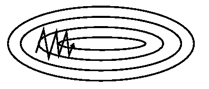
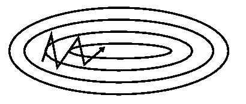
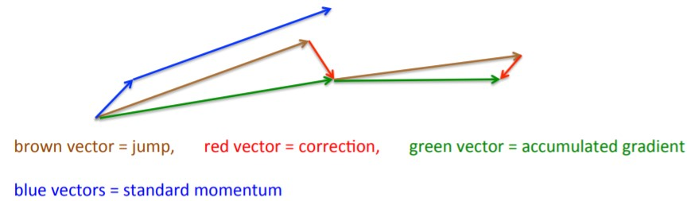

Stochastic gradient descent <<
Previous Next >> 程式
Gradient descent optimization algorithms
(資料來源)
Momentum
SGD 難以在陡峭的往正確的方向，那就是說在一個維度上，曲面的彎曲比另一個維度要陡得多，這在局部最優情況下很常見。下圖[圖.1]的同心圓代表中心下凹的曲面。在這些情況下，SGD 會在陡峭的地方振盪，而僅沿著底部朝著局部最優方向猶豫前進，如 [圖.1.a] 所 示。 Momentun(動量) 是一個幫助加速 SGD 在正確方向和抑制震盪的方法，在 [圖.1.b]。
|  |
 |
| 圖.1.a SGD without momentum (圖片來源) |
圖.1.b SGD with momentum (圖片來源) |
這麼做會增加一個係數 γ (gamma) 來更新上次的向量到正確向量 (修正偏差)，γ 通常設為 0.9 左右。
vt = γvt−1 + η·▽θJ(θ)
θ = θ − vt
實際上，使用動量的時候，就像將球推下山坡。球在下坡時滾動時會累積動量，在途中速度會越來越快（如果存在空氣阻力，直到達到極限速度，也就是 γ < 1) 參數更新也發生了同樣的事情：動量 (momentum) 對於梯度指向相同方向的維度增加，而對於梯度改變方向的維減少動量。結果，我們獲得了更快的收斂並減少了振盪。
Nesterov accelerated gradient
Nesterov accelerated gradient（NAG）是一種使動量具有一個去向的概念，以便在山坡再次變高之前知道它會減速。我們知道使用動量 γvt−1 來移動參數。計算 θ − γvt−1 這樣就給了參數的下一個位置的近似值（完整更新缺少的梯度），這是參數將要存在的大致概念。現在，通過計算與當前參數無關的梯度來有效地看到目前的參數 θ 將會移動到的位置：
vt = γvt−1 + η·▽θJ(θ−γvt−1)
θ = θ − vt

圖.2 NAG (圖片來源)
同樣，我們設置動量 γ 約為 0.9。動量首先計算當前梯度（[圖.2] 中的藍色小向量），然後在更新的累積梯度（藍 色向量）的方向上發生較大的跳躍，而 NAG 首先在先前的累積梯度的方向上進行較大的跳躍（棕色向量），測量梯度，然後進行校正（紅色向量），從而完成 NAG 更新（綠色向量）。這種預期的更新可防止我們過快地進行，並導致響應速度增加，從而顯著提高了 RNN 在許多任務上的性能。有關 NAG 背後另一解釋，請參見此處，而 Ilya Sutskever 在其博士論文中給出了更詳細的概述。
Adagrad
Adagrad 是一個梯度優化的算法，它可以做到：學習率適應參數，對於頻繁出現的特徵相關參數執行較小的更新(較低的學習率)，以及對不經常出現的特徵相關參數進行較大更新（即學習率較高）。Adagrad 可以提高 SGD 的強度，用於訓練大型神經網絡。
先前，在同一次 θ 參數(更新後就算另一次)，每個 θ 都使用相同的 η (學習率)。Adagrad 則是對每個 θ 參數使用 不同的 η，t 代表 time step。先將 Adagrad 的更新參數向量化。用 gt 表示 time step 的梯度，gt,i 表示目標函數 (參數 θ 在 time step t) 對參數做偏微分計算。
gt,i = ▽θJ(θt,i )
當 SGD 更新每個參數 θi，在每個 time step t，因此變成：
θt+1,i = θt,i − η · gt,i
更新規則，Adagrad 根據先前 θi 計算的梯度，對每個參數 θi 修改整個學習率 η 在每個 time stept：
θt+1,i = θt,i − [η / (Gt,ii + ϵ)½]
Gt ∈ Rd×d 這是一個對角矩陣每個對角元素 i，i 是關於 θ 梯度平方和取決於 time stept，ϵ 是避免分母為 0(ϵ 通常 為 10−8 )，如果沒有平方根運算，該算法的性能將大大降低。 Gt 包含了過去梯度平方根，由於全部 θ 參數沿著對角線，通過向量的內積計算 Gt 和 gt：
θt+1 = θt − [η / (Gt + ϵ)½]·gt
Adagrad 主要好處之一是，無需手動調整學習率。大多數實現使用預設值 0.01 並將其保留為預設值。Adagrad 主 要弱點是會累積分母的平方梯度：由於每項都是正的，累積和會在訓練中不斷增長。反過來，學習率下降，並最終變 得無限小，這算法就不再獲得知識。
Adadelta
Adadelta 是 Adagrad 的延伸，下降其激進的程度，單調的降低學習率。Adadelta 會限制過去累積的梯度，並將其 限制在某個特定大小 w，並代替 Adagrad 過去累積的梯度平方，以梯度總和是遞迴定義為所有過去衰減梯度平方平均值。流動平均 E[g2]t 在 time step t 然後取決於 (像 Momentum 的 γ) 先前 平均和最近梯度：
E[g2]t = γE[g2]t-1 + (1 − γ)g2t
γ 值和 Momentum 的相似，約為 0.9，現在根據參數更新向量 △θt 來重寫 SGD：
△θt = −η · gt,i
θt+1 = θt + △θt
Adagrad 的參數更新向量替換成：對角矩陣 Gt 過去梯度平方的衰退平均 E[g2]t
△θt = − [η / (Gt + ϵ)½]·gt
replace Gt with E[g2]t ⇒ △θt = − [η / (E[g2]t + ϵ)½]·gt
由於分母只是梯度的均方根 (RMS)，我們可以取代成縮寫：
△θt = − η RMS[g]t · gt
這個更新單位和 SGD、Momentum 以及 Adagrad 的單位不符合，因此更新需有相同的參數。為了實現這一點，首先定義另一個指數衰減平均值，這次不是梯度平方更新而是參數平方更新：
E[△θ2]t = γE[△θ2]t−1 + (1 − γ) △ θ2t
RMS 參數更新:
RMS[△θ]t = (E[△θ2]t + ϵ)½
RMS[△θ]t 是未知的，更新參數的 RMS 取近似值到上個 time step。用 RMS[△θ]t-1 取代學習率 η，最後產生新 的規則：
△θt = − (RMS[△θ]t-1 / RMS[g]t )·gt
θt-1= θt + △θt
使用 Adadelta，甚至不需要設定預設學習率，因為它已從更新規則淘汰。
RMSprop
RMSprop 是 Geoffrey Hinton 在他的課程中提出的未公開自適應學習率的方法。
RMSprop 和 Adadelta 都是為了解決 Adagrad 的學習率急劇下降的問題個別獨立開發出來的解決方式。RMSprop 實際上與 Adadelta 得出的第一個更新向量相同：
E[g2]t = 0.9E[g2]t + 0.1g2t
θt+1 = θt − [η / (E[g2]t + ϵ)½]·gt
RMSprop 也將學習率除以梯度平方的指數衰減平均值。Hinton 建議 γ 設為 0.9，好的預設學習率 η 數值為 0.001。
Adam
Adaptive Moment Estimation 自適應矩評估 (Adam) 是另一種計算每個評估學習率的方法。出了儲存過去梯度平 方的指數衰減平均值 vt，就像 Adadelta 和 RMSprop 一樣，Adam 還保留過去梯度的指數衰減平均值 mt，類似動量 (Momentum)。如果 Momentum 被視為順著斜坡下滑的球，而 Adam 則是像一個帶有摩擦的沉重的球，因此更適合待在 error face 平坦的最小值區域。計算過去梯度平方的衰減平均值 mt 和 vt 分別如下：
mt = β1mt-1 + (1 − β1)·gt
vt = β2vt-1 + (1 − β2)·g2t
mt 和 vt 分別是第一階矩平均估計值和第二階矩無中心方差估計值，因此是方法的名稱。像 mt 和 vt 被初始化為向量 o，Adam 的作者觀察到它們偏向零，特別是在初始 time step，尤其是在衰減率較小的時候 (也就是說 β1 和 β2 趨近於 1) 藉由計算校正偏差第一矩 m̂t 和第二矩 v̂t 抵消偏差：
m̂t = mt /(1 − βt1)
v̂t = vt /(1 − βt2)
使用他們去更新參數，就像 Adadelta 和 RMSprop 中所看到的那樣，這將產生 Adam 更新規則：
θt+1 = θt − [η (v̂t )½ + ϵ] m̂t
β1 預設值建議為 0.9，β2 預設值建議為 0.999，ϵ 預設值建議為 10−8。根據經驗證明 Adam 表現良好，並且與其他自適應學習算法相比具有優勢。
AdaMax
在 Adam 更新規則中的 vt 係數是與梯度成反比地縮放過去梯度的範數 (通過 vt-1 項) 和當前梯度 |gt|2 ：
vt = β2vt-1 + (1 − β2)|gt|2
我們轉換這個更新到 ℓp。注意 β2 參數化為 βp2：
vt = βp2vt-1 + (1 − βp2)|gt|p
大規範 p 值使數值上變得不穩定，這就是為什麼 ℓ1 和 ℓ2 規範在實踐中是最常見的。然而，ℓ∞ 通常也表現出穩定 的行為。作者 (Kingma and Ba, 2015) 提出了 AdaMax 並證明了和 ℓ∞ 收斂到更穩定的值。為了避免與 Adam 混用，所以使用 ut 來表示無窮範數約束 vt ：
ut = β∞2vt-1 + (1 − β∞2)|gt|∞
= max(β2 · vt-1, |gt|)
替換為 Adam 更新公式 (v̂t )½ + ϵ 和 ut 得出 AdaMax 更新規則：
θt+1 = θt − η·ut·m̂t
注意 ut 依靠最大運算，不建議 Adam 中的 mt 和 vt 偏向零，這就是為什麼不需要針對 ut 計算偏差。好的預設值 η = 0.002，β1 = 0.9 和 β2 = 0.999。
Nadam
Nadam (Nesterov-accelerated Adaptive Moment Estimation，Nesterov 加速的自適應矩估計)，結合 Adam 和 NAG。為了將 NAG 納入 Adam，需要修改動量項 mt。使用先前符號回顧動量更新規則：
gt = ∇θt J(θt)
mt = γmt-1 + ηgt
θt+1 = θt − mt
J是目標函數，γ 是動量衰減項，η 是 step size(學習率)，上面的第三個方程式擴展為：
θt+1 = θt − (γmt-1 + ηgt)
再次證明了動量涉及在前一個動量向量的方向上往前一步和在當前梯度的方向上邁出一步。NAG 然後允許計算梯度之前透過更新動量步長參數使梯度方向上執行更精確的步長。因此，我們只需要修改梯度 gt 到達 NAG：
gt = ∇θt J(θt − γmt-1)
mt = γmt-1 + ηgt
θt+1 = θt − mt
Dozat 建議修改 NAG：一次用於更新梯度 gt 第二次更新參數 θt+1，直接應用先前的動量向量來更新當前參數：
gt = ∇θt J(θt)
mt = γmt-1 + ηgt
θt+1 = θt − (γmt + ηgt)
為了將 Nesterov 動量添加到 Adam，可以類似地用當前動量向量替換以前的動量向量。回想一下 Adam 更新規則 如下：
mt = β1mt-1 + (1 − β1)gt
m̂t = mt / (1 − βt1)
θt+1 = θt − { η / [(v̂t )½ + ϵ ]} m̂t
用定義拓展第二個方程式：
θt+1 = θt − { η / [(v̂t )½ + ϵ ]}{( β1mt-1) / (1 − βt1 ) + [(1 − β1)gt]/(1 − βt1 )}
注意 (β1mt-1) / (1−βt1)只是前一個的 time step 的動量向量的偏差來校正評估。因此，可以將其替換為 m̂t-1：
θt+1 = θt − { η / [(v̂t )½ + ϵ ]}[β1m̂t-1 + (1 − β1)gt / (1 − βt1 )]
為簡化，因為無論如何將在下一步中替換分母，所以忽略了分母 1 − βt1。該方程式再次看起來和上面擴展的動量更 新規則非常相似。可以像以前一樣添加 Nesterov 動量，方法是用當前動量向量偏差校正後的評估值替換前一時間步 長的動量向量偏差校正後的評估值，這為我們提供了 Nadam 更新規則：
θt+1 = θt − { η / [(v̂t )½ + ϵ ]}[(β1m̂t + (1 − β1)gt / (1 − βt1 )]
AMSGrad
Reddi 等（2018）。正式化了這個問題，並指出了泛化行為不佳的原因：將過去梯度平方的指數移動平均值作為自適應學習率方法。雖然引入指數平均值的動機很充分：應防止學習率隨著訓練的進行而變得無限小；但這也是 Adagrad 算法的關鍵缺陷。在其他情況下，短期記憶的梯度成為障礙。
在 Adam 收斂到次優解的環境中，已經觀察到一些小型批次提供了較大且信息豐富的梯度，但是這些小型批次很少出現，因此指數平均會減小其影響，從而導致收斂性較差。作者 (資料來源的作者) 提供了一個簡單的凸型優化問題的例子，其中 Adam 可以觀察到相同的行為。AMSGrad算法是為了解決此問題，這算法使用了過去梯度平方的最大值 vt 而不是指數平均值來更新參數。vt 的定義與先前的 Adam 相同：
vt = β2vt-1 + (1 − β2)g2t
而不是直接使用 vt(或其偏差更正的版本 vˆt），如果現在使用以前值的大於現在的值：
v̂t = max(v̂t-1 , vt)
這方式 AMSGrad 不會增加步長 (step size)，從而避免了 Adam 遇到的問題。為了簡化，AMSGrad 去除了 Adam 的去偏差 (debias) 步驟。可以看到完整的 AMSGrad 更新，沒有經過偏差校正的估計：
mt = β1mt-1 + (1 − β1)gt
vt = β2vt-1 + (1 − β2)g2t
vˆt = max(v̂t-1 , vt )
θt+1 = θt − { η / [(v̂t )½ + ϵ ]} mt
在小型數據集和 CIFAR-10 上，與 Adam 相比，性能有所提高。但是，其他實驗顯示其性能與 Adam 相近或更 差。在實際運用，AMSGrad 是否能勝過 Adam，還有待觀察。
Gradient noise
增加 noise 跟隨高斯分布 N(0, σ2t ) 對每個梯度更新：
gt,i = gt,i + N(0, σ2t )
根據排定時間對差異計算：
σ2t = η /(1 + t)γ
添加這種 noise 對不良初始化的網絡可使其強化，並有助於訓練特別深且復雜的網絡。他們懷疑增加的噪聲使模型 有更多的機會逃脫並找到新的局部極小值，這對於更深的模型而言更常見。
Stochastic gradient descent <<
Previous Next >> 程式